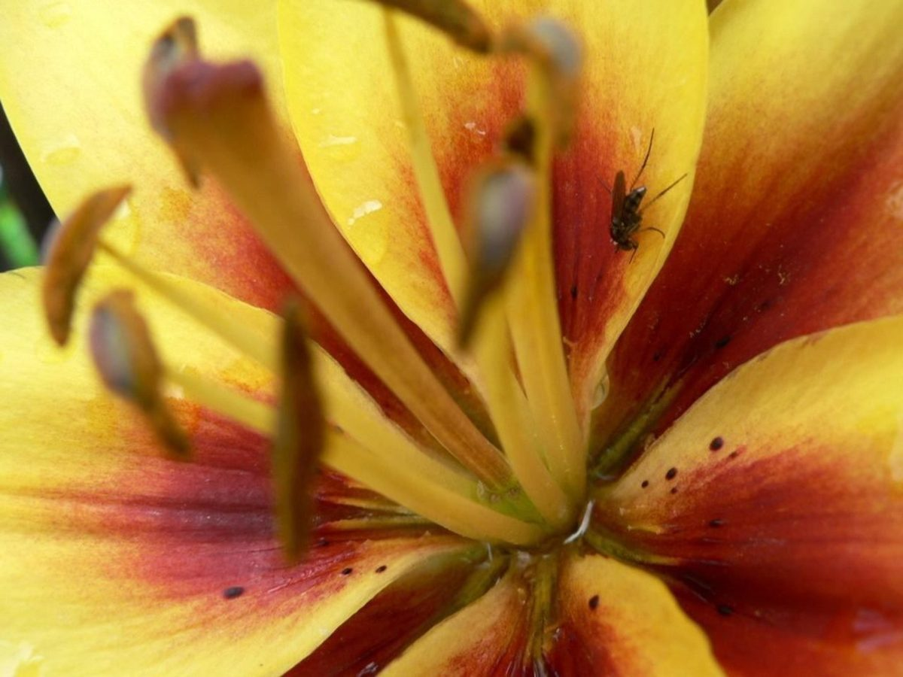
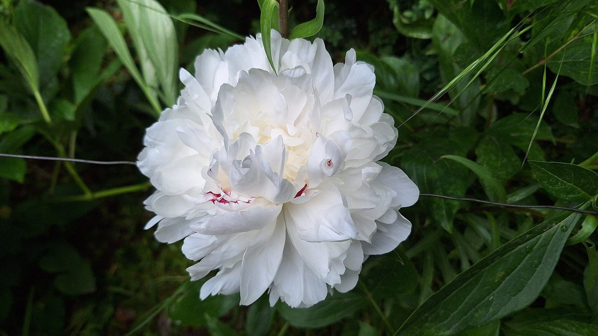
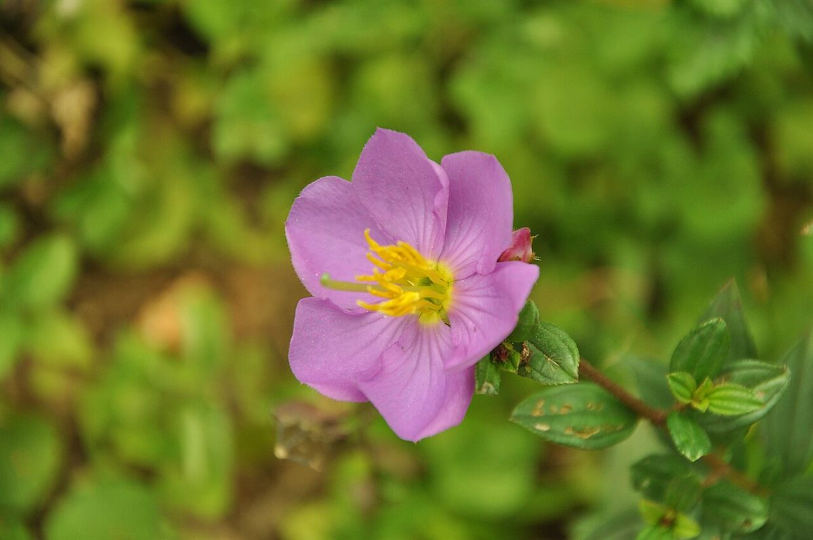

店のこと
結ぶ ― 確認できていること
お店について確認できているのは、所在地とInstagramのアカウントだけです。
このページの「想像してみる」部分は、制作側が想像して書いたものです。お店の実際の様子・考え・メニューとは関係ありません。
確認できていること
- 屋号は「ごはんとカフェのお店 花と果実」、業種はカフェ
- 所在地は島根県出雲市斐川町直江4832-9(〒699-0631)
- 電話番号はなし。連絡はInstagramから
- 営業時間・定休日・メニュー・価格・ご予約・駐車場は準備中

想像してみる
「花と果実」という名前から
由来は分かりません。制作側は、花が受粉して実を結ぶように、ひとつの出会いやひとつの時間が、あとから形になっていくことを連想しました。屋号には「ごはんとカフェのお店」とありますが、具体的な提供内容は未確認です(実際のお店の姿ではありません)。



場所のこと
斐川町について
お店の所在地は島根県出雲市斐川町です。町の様子やお店との関わりについては、確認できていないため掲載していません。